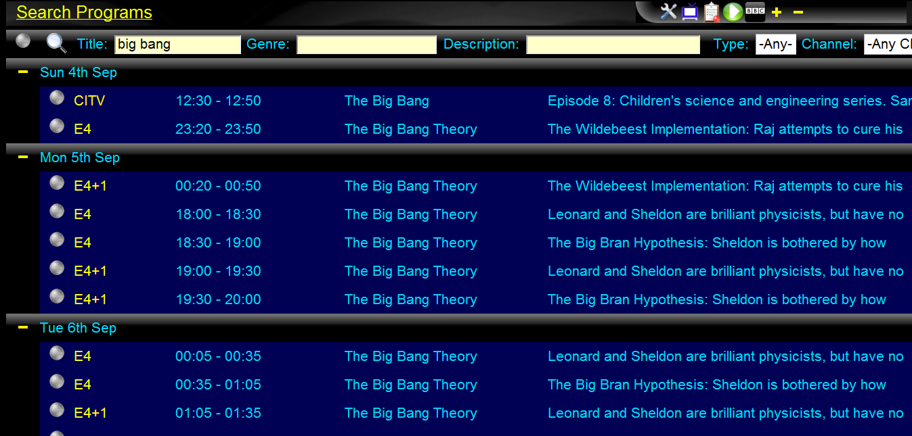
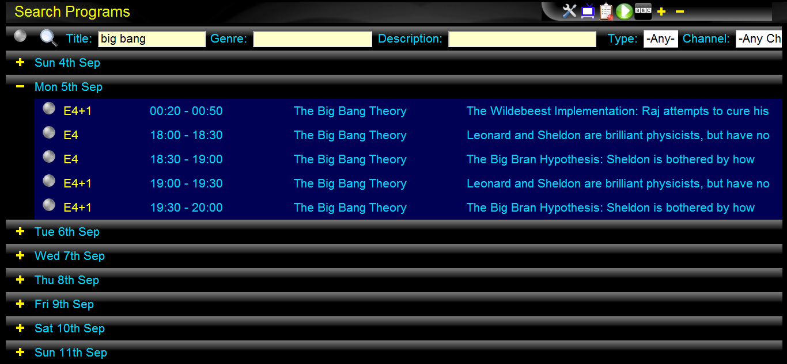
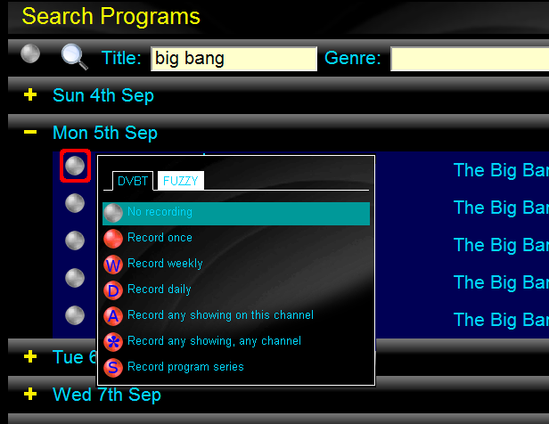
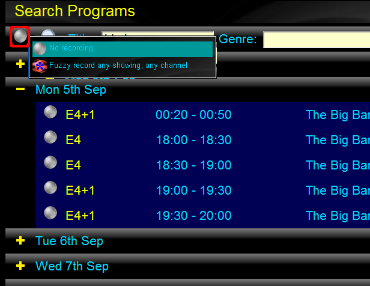

Click the "search programs" icon in the toolbar to bring up the search programs window.
The search window allows you to enter search criteria into the search bar and search for any matching programs. Normally you enter a name in the 'title' input, press the search icon and use the results.
Note: The search icon will only appear once something valid to search for has been entered. So you may need to tab or click to another input (depending on your web browser).
Like the "Program Recording List", you can expand/contract all of the search results by using the '+' and '-' icons in the toolbar. Again, each result heading has it's own '+' or '-'.
Like the "Program Recording List", you can use each program's record seelct menu to create a recording for that program title.
Alternatively, using the search bar's record select menu provides the means of setting up a "fuzzy" search recording.
In this case, a recording is scheduled for any program titles that match the specified search expression.
When text is entered into the 'title' input box, a search is
done assuming wildcards before and after the entered text. So, for
example, entering
'big bang'
will match programs
'The Big Bang Theory'
, and
'T4: The Big Bang Theory'
.
You can anchor the start and/or end to match the program title by
using ^ to anchor the start, and $ to anchor the end.
For example, inputting
'^The Big Bang'
will match
'The Big Bang Theory'
but not
'T4: The Big Bang Theory'
.
Using % in the text results in wildcard matching of any character(s) at that position.
These same matching rules are used for a "fuzzy" recording.
Although the broadcast genre information is not as useful as we'd like, one thing it is good at is for searching for films. Enter 'film' into the genre and pressing search will return the list of all films for the next two weeks. Obviously you can refine this using the 'title' input and/or the 'channel' dropdown.